Analysis of the New World Monkeys dataset
Paul Bastide
2018-09-11
Source:vignettes/monkeys.Rmd
monkeys.RmdDataset
The dataset is taken from Aristide et al. (2016)1, and is embedded in the package. We can load and plot it easily.
library(PhylogeneticEM)
data(monkeys)
plot(params_BM(p = 2),
data = monkeys$dat, phylo = monkeys$phy,
show.tip.label = TRUE, cex = 0.5, no.margin = TRUE)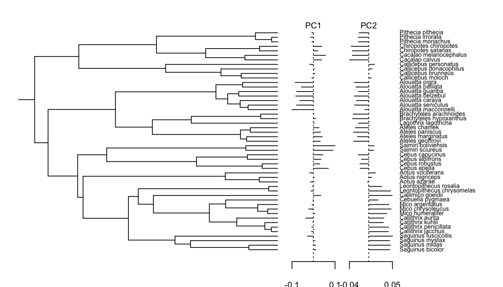
This plot function inherits from most of the optional arguments of the popular ape plot function (here for instance, the optional argument show.tip.label is used). Many other graphical parameters can be set by the user, so as to control the output of the function, see the manual pages for more details. The two traits (PCs) are represented on the right, each with its own scale. Plotting the data on the tree before analyzing it allows us to spot potential errors or outliers.
Inference
By default, the inference is done on an automatically computed grid of 10 alpha values. To keep the computations down, we ask for a custom grid of only 4 values, but this number should be raised on a real application. The maximum number of shifts considered is here 10, and should be adapted considering the size of the tree.
res <- PhyloEM(phylo = monkeys$phy,
Y_data = monkeys$dat,
process = "scOU", ## scalar OU model
random.root = TRUE, ## Root is stationary
stationary.root = TRUE,
nbr_alpha = 4, ## Number of alpha values tested (should be raised)
K_max = 10, ## Maximal number of shifts
parallel_alpha = TRUE, ## This can be set to TRUE for
Ncores = 2) ## parallel computations
res## Result of the PhyloEM algorithm.
## Selected parameters by the default method:
## 2 dimensional scOU process with a random stationary root.
##
## Root expectations:
## [1] 0.01552091 -0.01483439
##
## Root variance:
## [,1] [,2]
## [1,] 3.636791e-04 -9.031817e-05
## [2,] -9.031817e-05 1.230269e-04
##
## Process variance:
## [,1] [,2]
## [1,] 1.477757e-04 -3.669947e-05
## [2,] -3.669947e-05 4.999019e-05
##
## Process selection strength:
## [,1] [,2]
## [1,] 0.2031677 0.0000000
## [2,] 0.0000000 0.2031677
##
## Process root optimal values:
## [1] 0.01552091 -0.01483439
##
## Shifts positions on branches: 4, 63, 46
## Shifts values:
## 4 63 46
## [1,] -0.01812684 -0.093914264 0.08031859
## [2,] 0.05234025 -0.008148889 0.02527294
##
##
##
## See help to see all plotting and handling functions.The result is stored in an object of class PhyloEM, which has several extractors available (see manual). The plot function shows solution selected by the default model selection method, but another one can be selected if needed. The same optional parameters can be used as before to control how the figure should look like.
plot(res)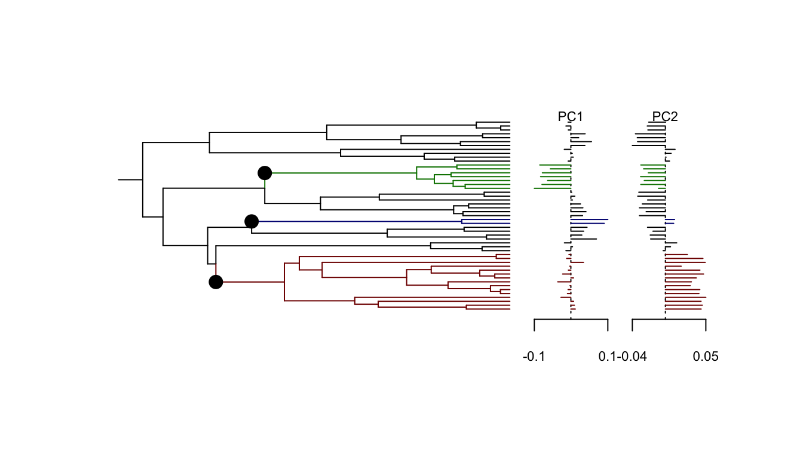
Function plot_criterion shows the value of the default model selection criterion for each number of shifts.
plot_criterion(res)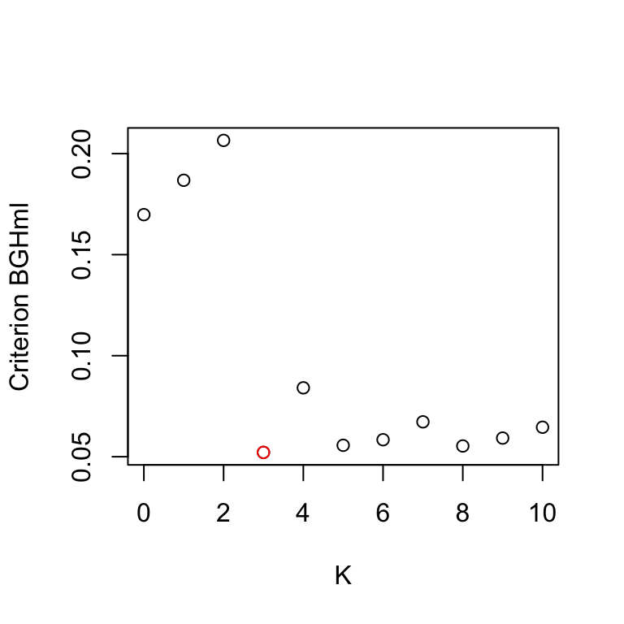
Here, the solution selected has three shifts. As shown above, the criterion is however a bit flat around its minimum, with a strange value for four shifts. This outlier is actually only due to the small grid on alpha taken in this toy example, and goes away for a finer analysis. To try and refine this result, one solution is to use a finer grid of alpha values. When a grid with 100 values is used, the solution with K=5 shifts is actually selected. We can plot it here for comparison.
plot(res, params = params_process(res, K = 5))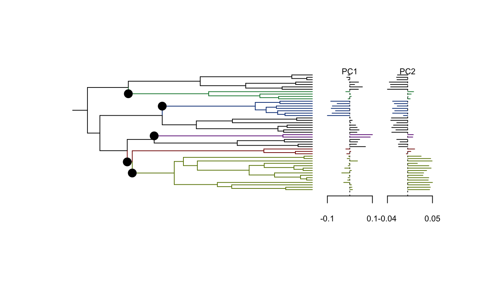
Equivalent Solutions
When plotting the solution with 5 shifts, the following warning pops up:
## Warning in params_process.PhyloEM(res, K = 5): There are several equivalent
## solutions for this shift position.Indeed, the solution with 5 shifts has three equivalent shift allocations on the branches. These solutions can be found and plotted thanks to the function equivalent_shifts.
plot(equivalent_shifts(monkeys$phy, params_process(res, K = 5)),
show_shifts_values = FALSE, shifts_cex = 0.5)
Here, the three solutions are very similar, and just have to do with the two shifts appearing on two sister branches at the bottom of the tree. Note that all these solutions have 5 shifts, and define the same clustering of the tips in 6 groups. These configurations all have the same likelihood, and hence cannot be distinguished from the data.
Invariance by Rotation
In theory, the method should not be affected by a rotation of the dataset (see Adams & Collyer, 2018 2 for a review of this problem). However, because of some numerical issues, it is possible that the results vary a little bit. We can explore this behavior on this dataset.
# An arbitrary rotation
theta <- pi/4
rot <- matrix(c(cos(theta), -sin(theta), sin(theta), cos(theta)),
nrow = 2, ncol = 2)
# Rotate data
Yrot <- t(rot) %*% monkeys$dat
rownames(Yrot) <- rownames(monkeys$dat)
# PhyloEM on rotated data
res_rot <- PhyloEM(phylo = monkeys$phy,
Y_data = Yrot, ## rotated data
process = "scOU",
random.root = TRUE,
stationary.root = TRUE,
nbr_alpha = 4,
K_max = 10,
parallel_alpha = TRUE,
Ncores = 2) plot(res_rot)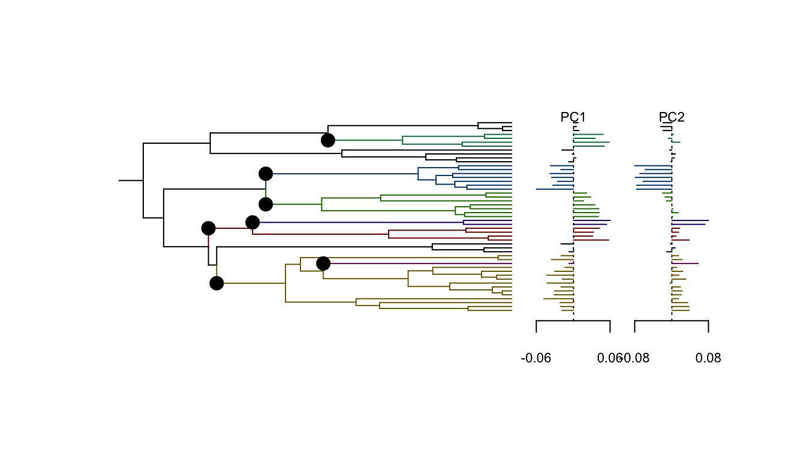
At first sight, the solution looks very different. Indeed, when applied on the rotated dataset, PhyloEM selects for a solution with 7 shifts, instead of 3. But, if we look at the solution obtained for, say, 3 shifts, then they are identical:
plot(res, params = params_process(res, K = 3), no.margin = TRUE)
plot(res_rot, params = params_process(res, K = 3), no.margin = TRUE)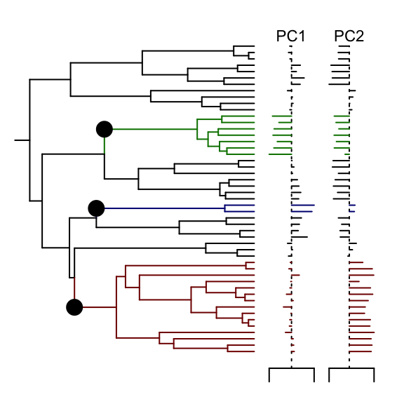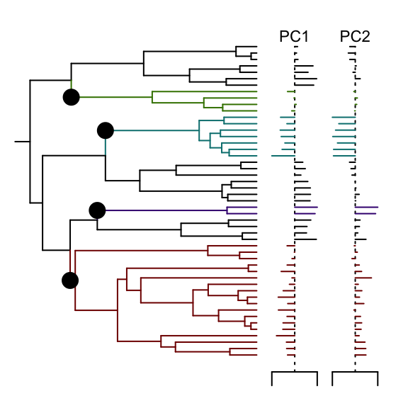
Looking a bit more closely at the outcome, we can see that the log likelihoods are actually very similar, except in a few places:
plot_criterion(res, "log_likelihood")
plot_criterion(res_rot, "log_likelihood", pch = "+", add = TRUE)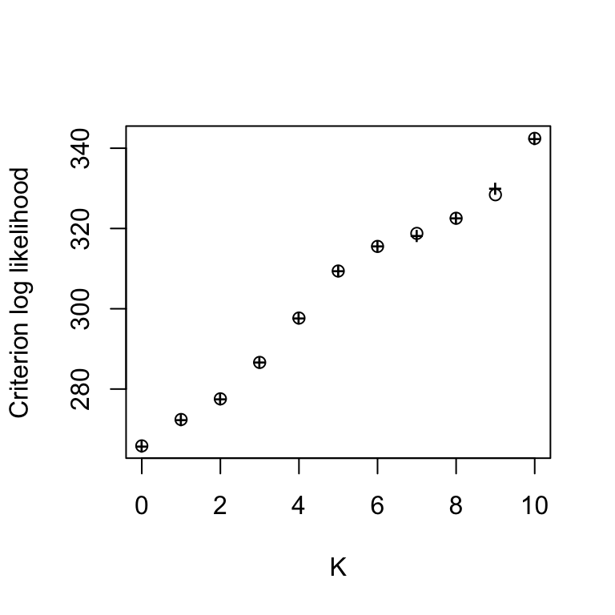
What happens is that, for numerical reasons, the likelihood was slightly better optimized in some cases for one or the other datasets. This had an impact on the criterion used, that is based on the penalized likelihood. We can see it with a plot:
plot_criterion(res)
plot_criterion(res_rot, pch = "+", add = TRUE)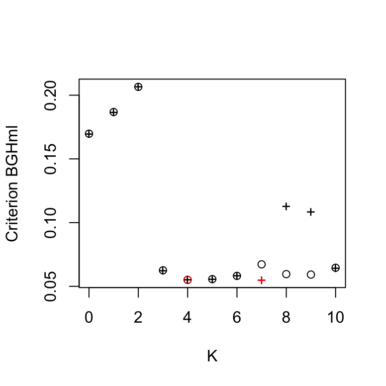
But, as the two datasets should be equivalent, we don’t need to choose between the two runs. For each number of shifts, our only goal is to find the maximum likelihood solution. Hence, for each number of shifts, we can just take the best of the two solutions, that is the one that converged the best. This can be done with a dedicated function:
res_merge <- merge_rotations(res, res_rot)This function takes the first fit as a reference (here, with the original data). For a given number of shifts, when the second fit has a better likelihood, its solution is selected instead. Note that the parameters of the second fit are expressed in the rotated space, so, when selected, they need to be transformed back into the original space (which is done automatically by the function). The resulting solution has the highest likelihood possible for each value of K, and the model selection criterion can be applied to this new solution path.
plot_criterion(res_merge)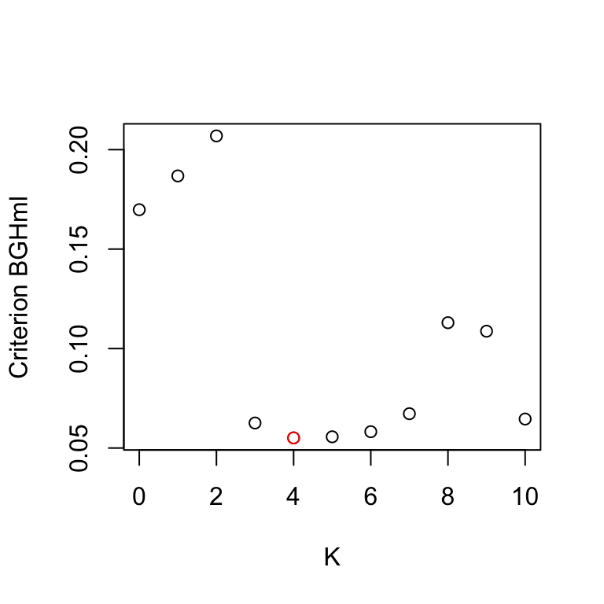
We can see here that the solution with 3 shifts is now selected again.
This merge function can be applied to more that two fits, as illustrated below.
# An other rotation
theta <- pi/3
rot2 <- matrix(c(cos(theta), -sin(theta), sin(theta), cos(theta)),
nrow = 2, ncol = 2)
# Rotate data
Yrot2 <- t(rot2) %*% monkeys$dat
rownames(Yrot2) <- rownames(monkeys$dat)
# PhyloEM on rotated data
res_rot2 <- PhyloEM(phylo = monkeys$phy,
Y_data = Yrot2,
process = "scOU",
random.root = TRUE,
stationary.root = TRUE,
nbr_alpha = 2, ## Note that this can also be different
K_max = 10,
parallel_alpha = TRUE,
Ncores = 2)
# Merge
res_merge2 <- merge_rotations(res, res_rot, res_rot2)Here, this does not change the result.
plot_criterion(res_merge2)Lizard Dataset
On the previous dataset, the introduction of rotations might appear a bit artificial. However, for some highly correlated datasets, such rotations might be needed. For instance, when studying the Anolis Lizard dataset (Mahler et al., 20133), the application of several pseudo-orthonormalisation techniques on the original dataset were needed to get a good maximum likelihood solution for all values of K. See Bastide et al. (2018)4 for more details on this analysis.
EB model
It can be shown that an Early Burst model (EB) is formally equivalent on an ultrametric tree to a non-shifted scOU with a negative alpha value. It is possible to include this model in the fit, by allowing “negative alpha” values in the function PhyloEM.
Note that, although the case with no shift has a clear interpretation (EB model), an scOU with shifts and a negative alpha can be hard to interpret, and is not always appropriate. One should hence be careful when using and interpreting such a model, and the use of this functionality is not encouraged for a first analysis.
res_neg <- PhyloEM(phylo = monkeys$phy,
Y_data = monkeys$dat,
process = "scOU",
random.root = FALSE, ## root needs to be fixed
K_max = 10,
parallel_alpha = TRUE,
Ncores = 2,
nbr_alpha = 4, ## 2 negative, 2 positive (should be more)
allow_negative = TRUE) ## allow negative alpha in the gridWe can extract the parameter of the fit with no shift, that is equivalent to an EB model:
params_process(res_neg, K = 0)## Warning in params_process.PhyloEM(res_neg, K = 0): The 'selection strength'
## is negative. One should only look at the un-normalized values of the
## shifts. To do so, please call this function using 'rBM = TRUE'.##
## 2 dimensional scOU process with a fixed root.
##
##
## Root value:
## [1] 0.006507194 -0.003532184
##
## Process variance:
## [,1] [,2]
## [1,] 5.370330e-05 -5.661713e-06
## [2,] -5.661713e-06 1.276595e-05
##
## Process selection strength:
## [,1] [,2]
## [1,] -0.01316466 0.00000000
## [2,] 0.00000000 -0.01316466
##
## Process root optimal values:
## [1] 0.006507194 -0.003532184
##
## This process has no shift.The “selection strength” \(\alpha\) is linked with the rate \(r\) of the EB by the relation: \(r = 2\alpha\).
We can also plot the criterion for the model selection. Empirically, we found that the “BGHmlraw” criterion would behave a bit better in this configuration.
plot_criterion(res_neg, "BGHmlraw")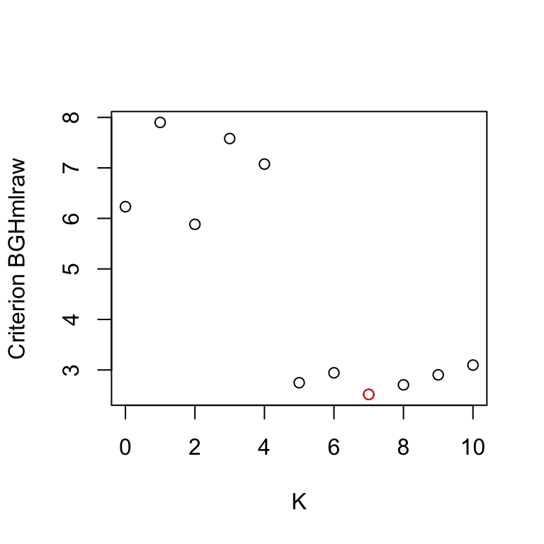
Here, a same solution with 7 shifts (and a positive alpha) is selected. Again, to keep computations to a minimum, we used a very coarse grid with only 4 values of alpha. On a finer grid, the same solution with 5 shifts is selected.
Aristide, L., dos Reis, S. F., Machado, A. C., Lima, I., Lopes, R. T., & Perez, S. I. (2016). Brain shape convergence in the adaptive radiation of New World monkeys. Proceedings of the National Academy of Sciences, 113(8), 2158–2163.↩
Adams, D. C., & Collyer, M. L. (2018). Multivariate Phylogenetic Comparative Methods: Evaluations, Comparisons, and Recommendations. Systematic Biology, 67(1), 14–31.↩
Mahler, D. L., Ingram, T., Revell, L. J., & Losos, J. B. (2013). Exceptional Convergence on the Macroevolutionary Landscape in Island Lizard Radiations. Science, 341(6143), 292–295.↩
Bastide, P., Ané, C., Robin, S., & Mariadassou, M. (2018). Inference of Adaptive Shifts for Multivariate Correlated Traits. Systematic Biology, 67(4), 662–680.↩